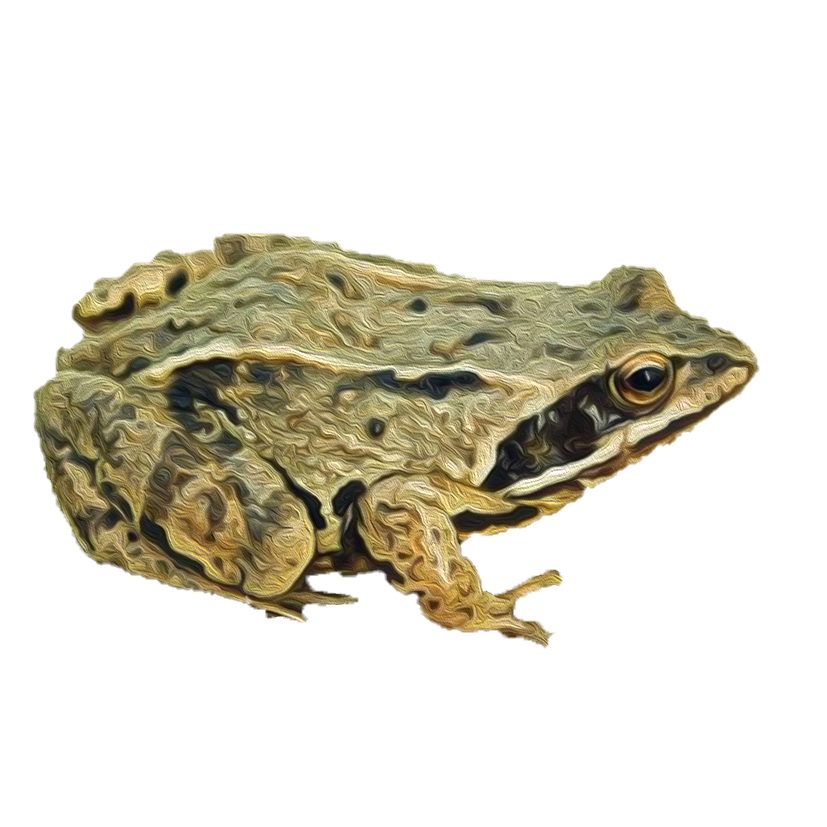
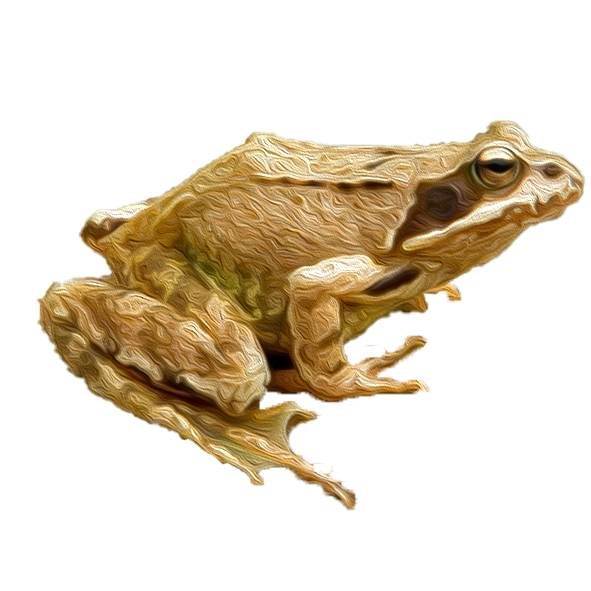

Жаба гостроморда
Тварини середніх розмірів, довжина тіла статевозрілих особин 40-64 мм. Дослідження морфологічних ознак тварин із Закарпаття показало, що довжина тіла самців становить близько 52 мм, самиць — 53 мм. Внутрішній п'ятковий горб високий. Голова загострена, на спині є дві поздовжні спинно-бокові складки, у забарвленні переважають коричнювато-світлі або оливково-бурі тони, позад голови добре виявлена темна L-подібна пляма, черевний бік без плям. По боках голови розташовані темні смуги, які доходять до основи передніх кінцівок.
Існують експериментальні дані (які потребують, вірогідно, перевірки й підтвердження), що ознаки крапчастості та плямистості є рецесивними по відношенню до напівкрапчастості й напівплямистості. Задні кінцівки розвинені добре і, якщо їх витягнути уздовж тіла (у напрямку до голови), то скоковий (надступаковогомілковий) суглоб може доходити до очей (представники номінативного підвиду), а в інших — дещо заходить за кінець морди (жаби довгоногого підвиду wolterstorffi).
На задніх лапах часто є візерунок з декількох поперечних плям-смуг, пальці тут з'єднані плавальною перетинкою. Позад очей розташована добре виявлена барабанна перетинка. Самці мають внутрішні резонатори, в них розвинені шлюбні мозолі на перших пальцях передніх кінцівок.
В районі дослідження поширена нерівномірно. Виявлена у 23 пунктах, які розташовані у всіх чотирьох фізико-географічних районах. В період розмноження концентрується у водоймах різного типу, де щільність популяції більша порівняно із сухопутними біотопами. Найвищою щільність є в Гусятинському (в межах заповідника “Медобори”) та Борщівському р-нах – 11–14 ос./100 м. Для популяцій Чортківського, Бучацького та Золочівського р-нів вона коливається в межах 8–10 ос./100 м. Нижчою вона є у Кам’янець-Подільському та Бродівському р-нах, де складає 5–7 ос./ 100 м маршруту. Найменша кількість особин відмічена у Збаразькому р-ні – 1,4–2 ос./100 м. Щільність поселень виду – 5,42 ос./100 м
Жаба трав’яна
Жаби середніх розмірів (максимальна довжина тіла 100–110 мм). Загальне забарвлення тіла характеризується переважанням світло-коричневих тонів з наявністю плямистості. Як і для інших представників роду, доволі типовим є розвиток у потиличній області темної Λ-подібної (лямбдоподібної) плями та темних бічних «скроневих» смуг, що йдуть від кінчика морди майже до основи передніх кінцівок. На спинному боці тіла зазвичай виявлені темні плями неправильної форми, які в багатьох особин можуть збігатися з двома спинно-бічними складками шкіри. У деяких тварин уздовж середини спини проходить світла спинна смуга, яка зазвичай має нерізкі контури. На задніх кінцівках розвинені, як правило, поперечні смуги. Шкіра гладенька, з незначним розвитком дрібних горбочків.
Забарвлення черева представлене невеликими темними плямами неправильної форми на брудно-сірому або жовтуватому тлі, що торкаються одна одної. У шлюбний період горло самців набуває блакитного відтінку.
Порівняно з іншими бурими жабами задні кінцівки відносно короткі і якщо їх витягнути уздовж середньої осі тіла (у напрямку до голови), то скоковий (надступаковогомілковий) суглоб доходить лише до області очей або трохи заходить за них. Розміри (висота) внутрішнього п'яткового горбка невеликі, він виразно менший, наприклад, ніж в гостромордої жаби.
На внутрішньому боці перших пальців передніх лап самців розвинені шлюбні мозолі, розділені борозенками на чотири більш-менш виразні частки. Також наявні парні внутрішні горлові резонатори.
Виявлена у Кам’янецьПодільському р-ні Хмельницької обл., Борщівському, Бучацькому, Гусятинському, Заліщицькому і Збаразькому р-нах Тернопільської обл. та Бродівському і Золочівському р-нах Львівської обл. Щільність популяцій нерівномірна: її показники значно вищі у південно-східній та північній частинах регіону. Найбільшої чисельності вид сягає у Бродівському р-ні, де щільність популяцій 12–13 ос./100 м. У Борщівському та Кам’янець-Подільському р-нах вона складає 6,5-13 ос./100 м. Для Заліщицького та Гусятинського р-нів щільність дорівнює 6,5–8 ос./100 м. У Бучацькому р-ні зафіксована найнижча чисельність 1,3–4 ос./100 м. В місцях поселень щільність трав’яної жаби складає 5,7 ос./100 м.

